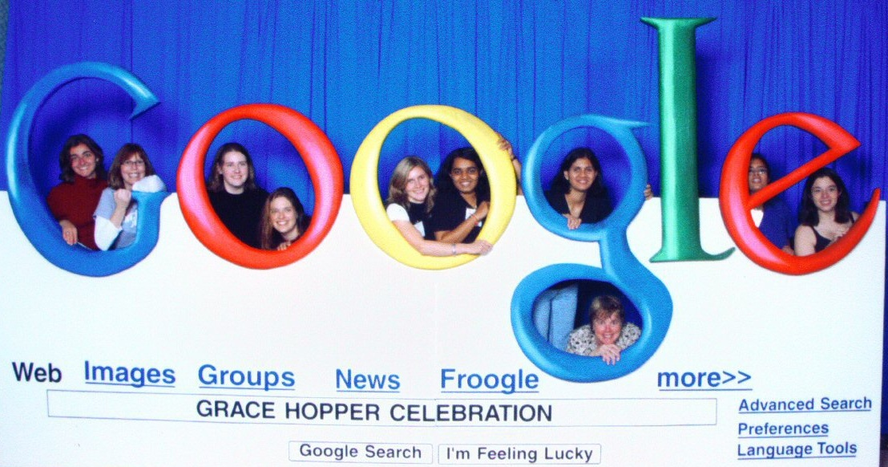

Scholarships
- Google's Anita Borg Memorial Scholarship for undergraduate seniors
- Microsoft Women's Scholarship (must apply for an internship)
- Palantir Technologies Scholarship for Women
- Society of Women Engineers
Internships

- Explore Microsoft Program for freshmen and sophomores
- APS/IBM Research Internship for sophomores and juniors
- AT&T Labs Fellowship Program for seniors and graduate students
ACM-Women
ACM-W's mission is to celebrate, inform and support women in computing, and work with the ACM-W community of computer scientists, educators, employers and policy makers to improve working and learning environments for women.
Anita Borg Institute
By providing inclusive platforms designed to ensure women's voices, ideas and spirits will result in higher levels of technical innovation, the Anita Borg Institute delivers programs that are changing the world for women and for technology.
Grace Hopper Celebration
The Grace Hopper Celebration of Women in Computing is a series of conferences designed to bring the research and career interests of women in computing to the forefront.
Women in Research
The CRA Committee on the Status of Women in Computing Research (CRA-W) aims to take positive action to increase the number of women participating in Computer Science and Engineering research and education at all levels.
National Center for Women & IT
NCWIT is seeking to increase the participation of women in computing and IT by building a learning community, creating and sharing research, and providing a united, amplified voice.